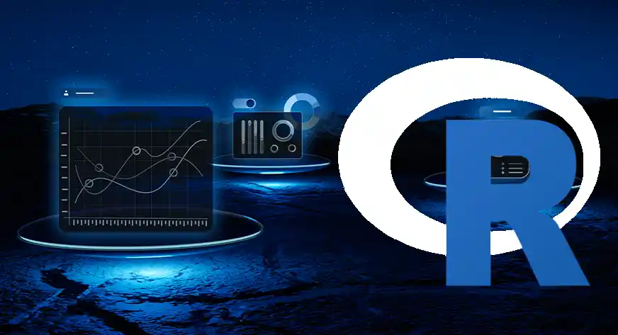
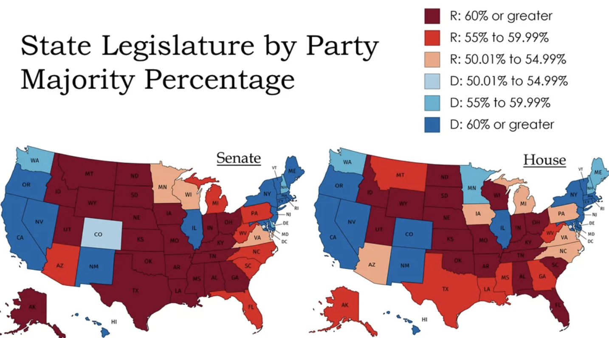
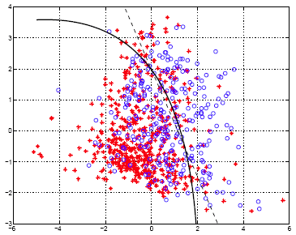

Projects
Selected Projects
A Curated Collection of Statistical Analysis Reports
Survival Analysis of AML (Acute Myeloid Leukemia) Patients
Cox proportional hazards modeling of remission duration in AML patients, with interpretation of hazard ratios and treatment effects.
Tools: R, survival analysis, Cox model

Regression and Logistic Modeling in R
Applied linear regression to model the relationship between roller weight and lawn depression, and used logistic regression to analyze how dilution affects seed germination probabilities.
Tools: R, linear regression, logistic regression, prediction intervals, data visualization

Ordinal Logistic Regression on SOPA Support
Used ordinal logistic regression to model legislators’ stance on the Stop Online Piracy Act as a function of party affiliation and campaign contributions.
Tools: R, ordinal logistic regression, predicted probabilities, model comparison
Multinomial Election and Snowfall Timing Analysis
Used multinomial logistic regression to model candidate vote probabilities in Chicago precincts and analyzed the timing of snowfall events in Halifax.
Tools: R, multinomial logistic regression, grouped summaries, probability modeling
Two-Way ANOVA in R: Teak Growth and Rhizobium Nitrogen Fixation
Two R-based ANOVA studies examining teak tree growth under different planting methods and root lengths, and nitrogen fixation in clover under varying rhizobium strain and culture combinations.
Tools: R, two-way ANOVA, interaction plots, simple effects, Tukey HSD
Contrasts, Transformation, and MANOVA in R
Three R-based analyses: custom contrasts for age-group comparisons, transformed regression with interaction for onion yield, and MANOVA for wheat grain and straw across field rows and columns.
Tools: R, custom contrasts, linear modeling, Box-Cox transformation, interaction analysis, MANOVA, data visualization

Repeated Measures, MANOVA, and Discriminant Analysis in R
This project combines repeated-measures and multivariate statistical analysis in R. It examines changes in self-esteem across treatment groups over time and uses MANOVA and discriminant analysis to distinguish rainforest leaves from different regions based on multiple shape measurements.
Tools: R, repeated-measures MANOVA, mixed-effects model, MANOVA, discriminant analysis

Python Learning Platform with Profiles, Quizzes, and Progress Tracking
A menu-based Python educational application that allows users to create secure profiles, log in, open lesson PDFs, complete quizzes, and track interactive learning progress.
Tools: Python, csv, os, subprocess, platform, bcrypt, matplotlib
Canadian Mortgage Loan Value Analysis
Analysis of how average new mortgage loan values changed across Canada, provinces, and selected metropolitan areas from 2012 Q3 to 2025 Q4, using descriptive statistics, hypothesis testing, bootstrapping, and regression modelling to examine the effects of time and geography.
Tools: R, readxl, tidyverse, dplyr, tidyr, lubridate, janitor, ggplot2, confidence intervals, Welch two-sample t-test, bootstrap resampling, linear regression, interaction regression, cross-validation
Cluster Analysis of Amino Acid Sequencing and Exoplanets
Clustering analysis of vertebrate genetic distances and exoplanet characteristics using hierarchical clustering with Ward’s method, dendrogram interpretation, z-score standardization, scree plots, and K-means cluster comparison.
Tools: R, tidyverse, dplyr, tidyr, readr, hclust, Ward’s method, dendrograms, rect.hclust, dist objects, scale, K-means clustering, set.seed, nstart, scree plot, within-cluster sum of squares